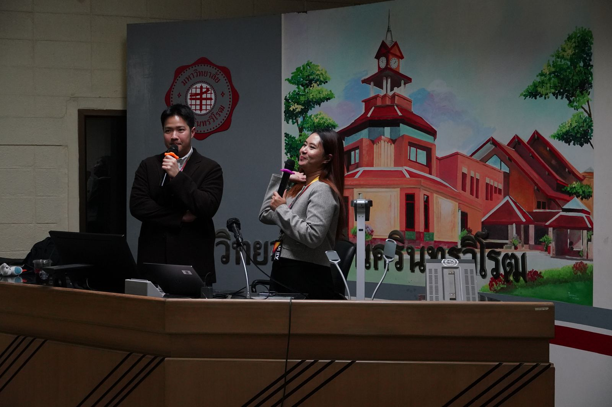

Academics & Research
Quality Assurance
ประกันคุณภาพการศึกษา
ระบบประเมินคุณภาพการศึกษาของคณะ ครอบคลุมตั้งแต่ระดับหลักสูตรจนถึงระดับคณะ
Assessment Frameworks
Three-Level Assessment
เกณฑ์ที่คณะใช้
คณะใช้ระบบประเมินคุณภาพสามระดับควบคู่กัน เพื่อให้ครอบคลุมทั้งมาตรฐานภายในประเทศและมาตรฐานสากล
-
Programme Standards
TQF
Thai Qualifications Framework
Programme Standards
มาตรฐานหลักสูตร
บริหารจัดการหลักสูตรตามเกณฑ์มาตรฐาน ทั้งด้านการออกแบบหลักสูตรและการจัดการเรียนการสอน
-
Faculty Level
EdPEx
Education Criteria for Performance Excellence
Faculty Level
ระดับคณะ
ประเมินตามเกณฑ์คุณภาพการศึกษาเพื่อการดำเนินการที่เป็นเลิศ
รอบ พ.ศ. 2567–2570 -
Programme · International
AUN-QA
ASEAN University Network Quality Assurance
International Programme Level
ระดับหลักสูตร (สากล)
ประเมินหลักสูตรตามมาตรฐานเครือข่ายมหาวิทยาลัยอาเซียน
Reports
Assessment Documents
เอกสารผลการประเมิน
รายงานการประเมินตนเอง (SAR) และผลการประเมินรายปียังไม่ได้เผยแพร่บนเว็บไซต์ — หากต้องการเอกสารฉบับเต็ม ติดต่องานนโยบายและแผน สำนักงานคณบดี
QA Officer · ผู้รับผิดชอบ
นางสาวธัญชนก บุญแปลง
งานนโยบายและแผน · โทรภายใน 11757